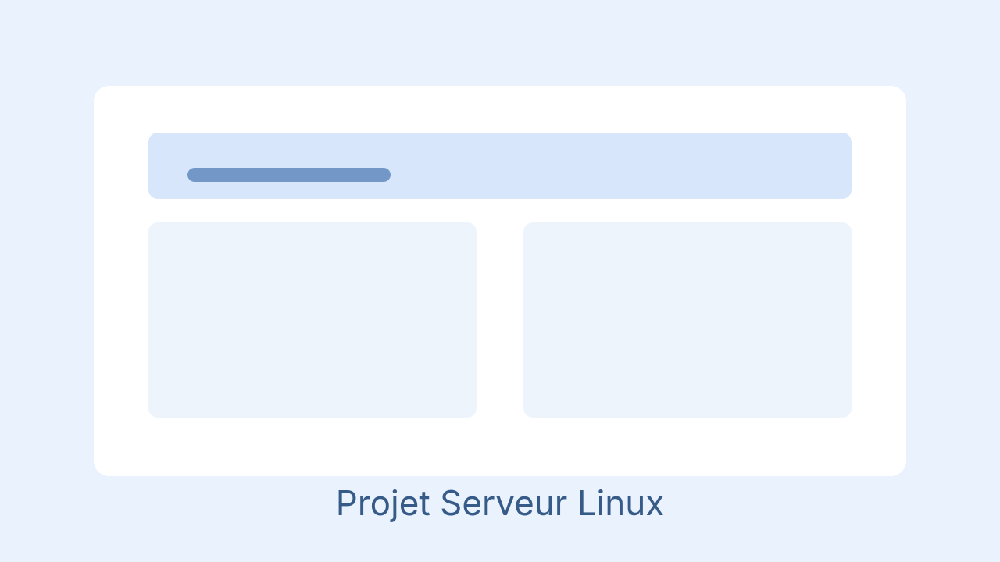
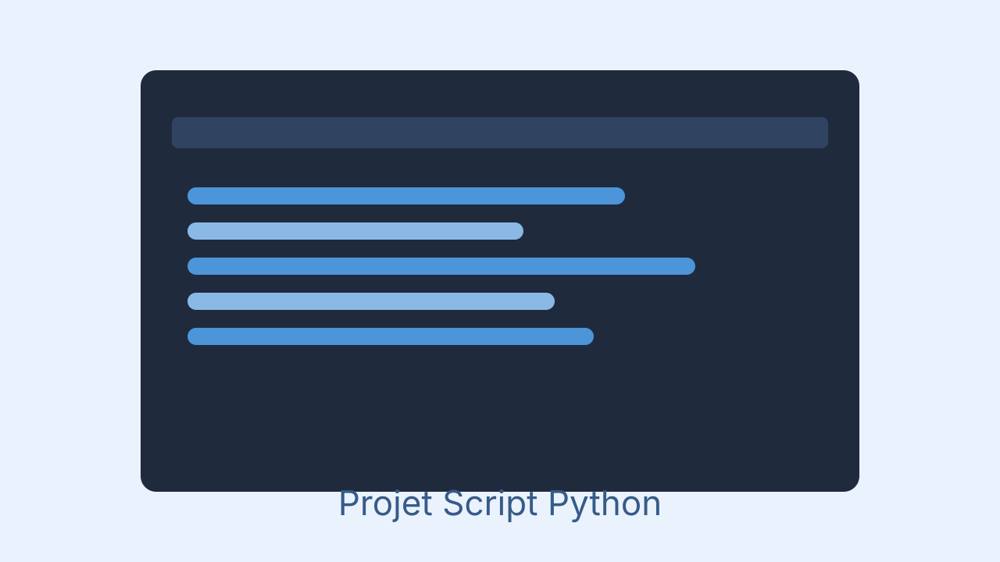

Réseaux
Adressage IP, VLAN, DHCP, DNS, routage inter-VLAN, supervision réseau.
Étudiant en 2ᵉ année de BTS SIO - Option SISR
Passionné par l'infrastructure IT, la cybersécurité et l'automatisation, je conçois et maintiens des environnements réseaux fiables, sécurisés et performants.
Compétences appliquées en contexte scolaire, de stages et projets personnels.
Adressage IP, VLAN, DHCP, DNS, routage inter-VLAN, supervision réseau.
Déploiement de services web, SSH, sauvegardes, droits utilisateurs, maintenance.
Active Directory, GPO, partages sécurisés, gestion des comptes et des accès.
Création d'environnements de test virtualisés, snapshots, isolation des services.
Durcissement de systèmes, règles de pare-feu, segmentation réseau et bonnes pratiques.
Gestion de disques, RAID, sauvegardes automatisées et procédures de wipe sécurisé.
Sélection de projets scolaires et personnels orientés systèmes et réseaux.

Installation d'un serveur web avec sécurisation SSH, sauvegarde automatique et monitoring.
Voir le projet
Conception d'un LAN avec VLAN, configuration DHCP/DNS et documentation technique.
Voir le projet
Mise en place d'une infrastructure (switch, routeur, firewall, serveurs), connexion Internet, stockage réseau et ERP.
Voir le projetUbisoft (6 semaines)
Ubisoft (6 semaines)
Lycée CARRIAT - 2024 à 2026
Spécialisation en solutions d'infrastructures, systèmes et réseaux.
Lycée Saint Aspais - 2021 à 2024
Parcours général avec les spécialités NSI et Mathématiques, avec Physique en classe de première.
Suivi de l'IA embarquée dans les objets du quotidien, notamment les écouteurs sans fil et les lunettes connectées.
Traduction automatique en temps réel, assistants vocaux contextuels, reconnaissance de l'environnement et enjeux de déploiement selon les régions.
Voir la veille complèteTableau de synthèse des situations professionnelles et compétences mobilisées dans le cadre de l'épreuve E5 du BTS SIO option SISR.
Récapitulatif des situations professionnelles réalisées en contexte scolaire et en stage, associées aux compétences des blocs 1, 2 et 3 du référentiel.
Voir le tableau completDisponible pour stage, alternance et collaboration sur des projets IT.